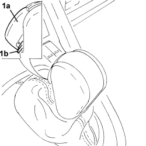
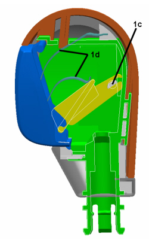
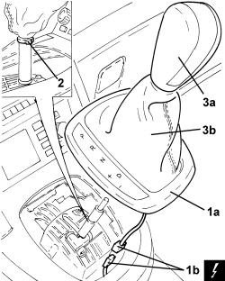

2135A16 AUTOMATIC TRANSMISSION LEVER HANDLE - R R
- Path
- Procedures > 21 GEARBOX UNIT > 2135 AUTOMATIC TRANSMISSION EXTERNAL CONTROLS > 2135A AUTOMATIC TRANSMISSION MANUAL CONTROLS > 2135A16 AUTOMATIC TRANSMISSION LEVER HANDLE - R R
- Kind
- repair procedure (removal / refitting; the operation number is the code)
- Applies to
- engines: 2.2, 1.9 JTD 16v, 2.4 JTD 20v; all production periods; only with equipment: AUTOMATIC TRANSMISSION
- Interactive page
- https://sloeber94.github.io/elrnDB-fCrm/en/#/194002336
Applies to: engines: 2.2, 1.9 JTD 16v, 2.4 JTD 20v; all production periods
 Removing
Removing
 Refitting
Refitting1. Raise the button (1a) until the retaining tooth (1b) can be releaased.

Applies to: engines: 2.2, 1.9 JTD 16v, 2.4 JTD 20v; all production periods

Applies to: engines: 2.2, 1.9 JTD 16v, 2.4 JTD 20v; all production periods
1. Release and remove the frame for the boot (1b) from the housing and lift it as necessary to disconnect the electrical connection (1b).
Description | Connector | |
|---|---|---|
1b | Automatic transmission gear selector control unit |
2. Open the ring securing the boot to the gear lever.
3. Remove the automatic transmission lever grip (3a) complete with boot (3b) extracting it upwards.

Applies to: engines: 2.2, 1.9 JTD 16v, 2.4 JTD 20v; all production periods
Refitting
Removing- Place the selector lever in position R.
- Fit the automatic transmission lever grip complete with boot, keeping the lever in position R with the button in the closed position.
- Position a new ring securing the boot to the gear lever and close it.
- Connect the electrical connection and place the boot surround in position.